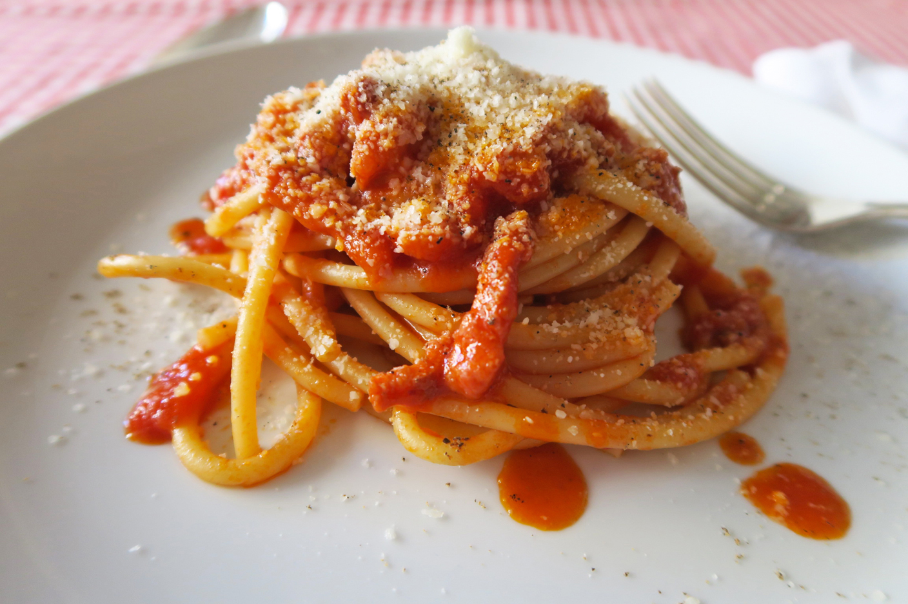

Spaghetti all'amatriciana

Description:
Amatriciana sauce is a very easy, quick and tasty condiment for pasta. Typical Roman dish, which was born in the gastronomic tradition of Amatrice, in the province of Rieti, amatriciana is prepared with very few ingredients. Inside, in fact, there are only bacon, tomatoes, white wine, oil, pepper and salt.
Ingredients:
- 800g tomato sauce
- 200g guanciale
- 30g pecorino cheese
- extra vergin olive oil
- black pepper
- salt
- chili pepper
Steps:
- We clean the guanciale by removing the rind, then cut it into strips of about 1 cm each.
- We put the guanciale in a pan, possibly an iron one, together with a little oil and brown over low heat for 7-8 minutes, until it has become crunchy but transparent.
- Once the guanciale has been browned well, add the chilli pepper and then add the white wine.
- Add the tomato and season with salt and pepper.
- Let the sauce cook over a moderate heat, then add the pecorino and mix a little. Let everything mix, then turn off the heat.
- Drain the spaghetti al dente, then add it to the sauce.